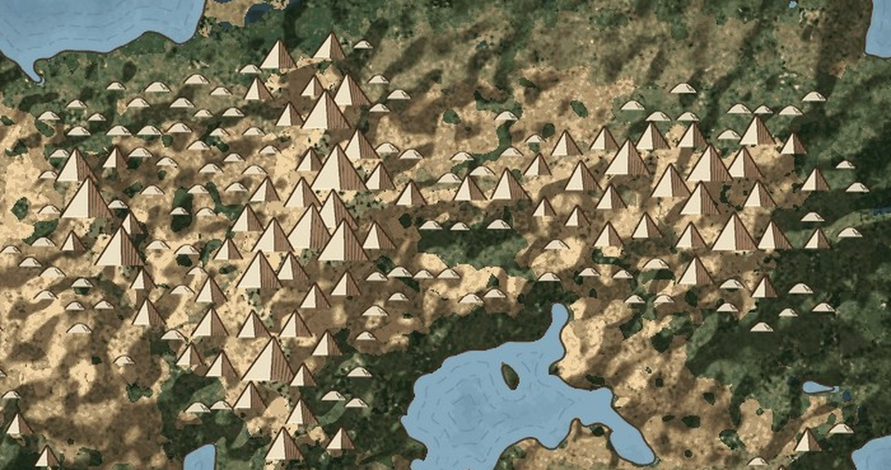

← 管理ページ / 11種類と5区分の比較 / 絵の地図の試作
山の形を実際の地形から選ぶ(三角との比較)
ユーザー案(2026-11-18)「山を三角で作るのはいただけない。山の形を現在の地形からパターン化し、コサイン類似度でそのパターンを置く方法はどうか」の試作です(目的: 実際の山の形から選んだ絵が、三角の記号より山らしくなるかを判断するため)。
方法: 世界の山岳地帯21か所の標高データから、32×32画素(約20km四方)の山の形を5,585個集めました。地図の山の置き場ごとに、地図の標高の形と、集めた山の形を比べ(形の向きだけを比べる、コサイン類似度)、似ている上位6個から1つ選んで、その山を斜めから見た絵として描いています。
方法: 世界の山岳地帯21か所の標高データから、32×32画素(約20km四方)の山の形を5,585個集めました。地図の山の置き場ごとに、地図の標高の形と、集めた山の形を比べ(形の向きだけを比べる、コサイン類似度)、似ている上位6個から1つ選んで、その山を斜めから見た絵として描いています。
絵の比較(山の周辺の拡大)
三角の山の絵(段階5b)

絵番号 E016実際の山の形から選んだ絵(段階6・新)
 絵番号 E017
絵番号 E017
全体の絵は こちら(段階6b)。新しい山は、実際の山の尾根と谷の形を線で描いているので、三角より自然な見た目になりました。一方、どれも円すい状にまとまって見える点と、似た形が並ぶ点が残ります。

数字: 山の形を型で表せるか
| 形の数(型) | 見ていない山との似かた(1が完全一致) |
|---|---|
| 三角(円すい)だけ | 0.084 |
| ならした乱数の形64個 | 0.491 |
| 実際の山の型 4個 | 0.513 |
| 実際の山の型 16個 | 0.612 |
| 実際の山の型 64個 | 0.662 |
学習はアンデス・ニュージーランド・日本アルプス以外の18か所(4,428個)で、見ていない山(1,157個)に、最もよく似た型との類似度の平均を調べました。三角は0.08と、ほとんど似ていません。実際の山の型は、数が増えるほど似かたが上がります。ただし、ならした乱数の形でも0.49あるため、型の優位は0.1〜0.17程度で、大きくはありません。
地図への適用
- 山の置き場66か所で、地図の標高の形と最も似た本物の山との類似度の平均は0.84でした(上の数字より高いのは、地図の標高がなめらかなためで、直接は比べられません)。
- 使った本物の山の形は65種類で、ほぼ同じ形の繰り返しは出ませんでした。
分かったこと
- 三角は、実際の山の形とほとんど一致しません(0.08)。実際の山の形から選ぶ方法は、見た目も数字も、三角よりはっきり良くなります。
- コサイン類似度による選択は、計算が軽く、ハブでも動かせる範囲です。
- 形の向きだけを比べるので、山の高さは別に決める必要があります(今は地図の標高から決めました)。
限界
- 山の絵の描き方(斜めから見た線の絵、縁を丸くなだらかにする処理)は私の設計です。形のパターン化とは別の工夫が入っています。
- 集めた山は21か所の山岳地帯のみで、火山や岩峰など、特徴的な形は少ないかもしれません。
- 画素の大きさ(約20km四方)が、地図の1マスの大きさに合っているかは未確認です。
- 似ている上位6個から乱数で1つ選んでいます。再現性や選び方の最適化は、まだです。
- 山の置き場は、前と同じ等間隔の置き方のままです。
出典: AWS地形タイル(Mapzen Terrarium。SRTMなどの公開標高データから作られたもの)。標高データそのものは掲載せず、集計と描いた絵だけを載せています。